오늘 만들 영상과 배울 것
지난 시간에 못 한 글자 뒤로 사람이 지나가는 타이틀을 먼저 끝내고, 이어서 오늘의 본 내용인 소리 다듬기와 말 자막으로 숏폼 한 편을 완성합니다.
1오늘의 학습 목표
- 영상을 두 줄로 겹치고 배경 제거로 사람만 오려, 글자 뒤로 사람이 지나가는 타이틀을 만들 수 있다.
- 오디오 패널의 프로 기능(💎)인 노이즈 제거·음성 보정·음향 노멀라이즈·음성 변조기와, 무료 기능인 음성 분리가 각각 무엇을 하는지 말할 수 있다.
- 에디트 파일럿에게 말로 부탁해 소리 정리를 시키고, 결과를 확인할 수 있다.
- 대본 기능으로 말 사이의 쉬는 구간을 한 번에 잘라 낼 수 있다.
- 자동 캡션을 만들고, 오타 수정과 자막 배경으로 원래 박혀 있던 자막을 덮을 수 있다.
2오늘 흐름 한눈에
곰 숏폼은 소리 → 자막 순서가 핵심입니다. 쉬는 구간을 잘라 길이가 바뀐 다음에 자막을 만들어야 자막이 말과 딱 맞습니다.
3오늘 쓰는 프로(💎) 기능 지도
우리는 프로 구독 중이라 보석(💎) 표시 기능을 전부 쓸 수 있습니다. 오늘은 오디오와 자막 쪽 보석 기능을 하나도 빼지 않고 다 눌러 봅니다.
| 어디에 | 기능 | 쉽게 말하면 | 오늘 STEP |
|---|---|---|---|
| 동영상 패널 | 배경 제거 → 자동 삭제 💎 | 사람만 남기고 배경을 지움 | 2 |
| 텍스트 템플릿 💎 · 효과음 | 크고 멋진 제목 글자, 휙 소리 | 2 | |
| 오디오 패널 | 음성 분리 Free | 노래에서 목소리와 반주를 나눔 | 3 |
| 음성 변조기 💎 | 목소리를 다른 목소리·효과로 바꿈 | 3 | |
| 노이즈 제거 💎 | 웅웅·쉬익 하는 잡음 지우기 | 4 | |
| 음성 보정 💎 | 목소리를 또렷하게 (강도 0~100) | 4 | |
| 음향 노멀라이즈 💎 | 큰 소리·작은 소리를 고른 크기로 | 4 | |
| 동영상(오디오) 번역기 💎 | 말을 다른 나라 말로 바꾸는 기능 | 5 한 걸음 더 | |
| 채널 채우기 | 한쪽 스피커에서만 나는 소리를 양쪽으로 | 참고 | |
| 타임라인 위 | 대본 💎 → 채우기용 단어 삭제 | 말 사이 쉼·반복·"음/어"를 한 번에 잘라 냄 | 4 |
| 오른쪽 아래 | 에디트 파일럿(EditPilot) 💎 | 말로 부탁하면 편집을 대신 해 줌 | 3·4 |
| 캡션 메뉴 | 자동 캡션 Pro | 말을 받아 적어 자막으로 | 5 |
| 캡션 템플릿 💎 | 숏폼식 자막 디자인 (히트·단어·글로우 등) | 5 | |
| 이중 언어 캡션 💎 | 한국어 + 다른 언어 자막을 두 줄로 | 5 한 걸음 더 | |
| 자동 가사 | 노래 가사를 자막으로 만드는 기능 | 3 한 걸음 더 |
4시작 전 준비
- 캡컷 PC 앱 실행 → 왼쪽 위에 Pro 표시가 있는지 확인
- 내 D드라이브 폴더 안에 3회차 폴더 하나 만들기 (오늘 받는 파일은 전부 여기에)
- 설정의 「공간」은 지난번처럼 자동 동기화 끄기 상태인지 확인
5오늘 나오는 말
- 트랙(타임라인의 한 줄) — 위에 있는 줄이 화면에서 앞에 보입니다.
- 노멀라이즈(소리 크기 고르게 맞추기)
- 캡션(자막과 같은 말)
- 키프레임(◇ 표시, "이 순간에는 이 값" 하고 찍는 점) — 점 두 개 사이가 저절로 움직입니다.
- 채우기용 단어("음", "어"처럼 뜻 없이 끼는 말)
오늘 쓸 영상·음악 받기
1교시는 걷는 사람 영상, 2교시는 곰·토리 영상과 노래 두 곡을 씁니다. 받은 파일은 모두 D드라이브 내 폴더 → 3회차 폴더에 저장하세요.
1무엇을 어디에 쓰나
21교시: 걷는 사람 영상 (하나만 골라 받기)
- 강사 견본 ① 벽돌 카페 (왼→오): 플로우 링크
- 강사 견본 ② 민트색 벽 (왼→오): 플로우 링크
- 펙셀스 ① 노란 벽·빨간 문 (왼→오): pexels.com/video/8126439
- 펙셀스 ② 보라색 벽 (왼→오): pexels.com/video/6951582
- 펙셀스 ③ 셔터 앞 (오→왼): pexels.com/video/5899455
- 플로우: 링크를 열고 영상 위 다운로드(↓)
- 펙셀스: 「무료 다운로드」 옆 ∨ → Full HD (1920×1080) 고르기
32교시: 영상 2개 + 노래 2곡 (전부 받기)
링크를 누르면 구글 드라이브 미리보기가 열립니다. 구글 로그인 없이 받을 수 있습니다.
| 파일 (누르면 열림) | 쓰는 곳 |
|---|---|
| 민원 해결 (곰, 세로) | STEP 4·5 오늘의 작품 |
| 뚜비 (토리와 뚜비의 달리기, 가로) | STEP 3 음성 변조기 |
| 마운틴팝 (the_mountain-pop-vocal.mp3) | STEP 3 음성 분리 |
| 마운틴록 (the_mountain-vocal-rock.mp3) | STEP 3 음성 분리 |
글자 뒤로 사람이 지나가는 타이틀
지난 시간에 못 한 내용을 여기서 합니다. 핵심은 같은 영상 두 줄 + 가운데 글자, 이 세 층 쌓기입니다.
1원리: 3층 샌드위치
2영상 넣고 똑같이 하나 더 깔기 필수
- 새 프로젝트 → 가져오기 → 걷는 영상 고르기
- 영상을 타임라인으로 끌어 놓기
- 영상 클립을 누르고 Ctrl+C
- 재생 헤드를 0초에 두고 Ctrl+V → 위쪽 줄에 같은 영상이 하나 더 생김
- 두 영상의 시작점이 0초로 딱 맞는지 확인
- 위쪽 영상 트랙 왼쪽의 스피커를 눌러 소리 끄기 (소리가 두 번 겹치지 않게)
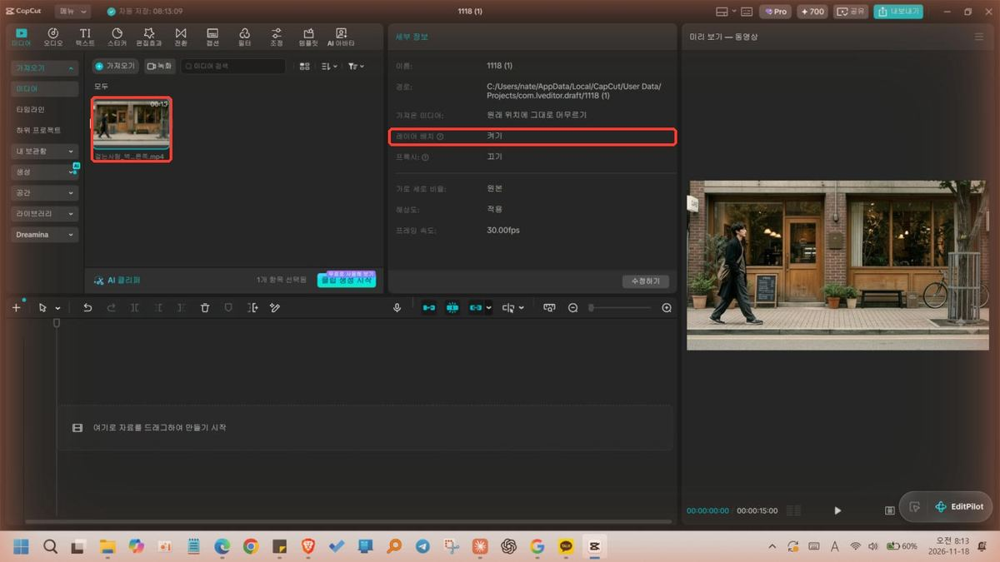
가져온 영상. 오른쪽 세부 정보에 「레이어 배치: 켜기」인지 이때 확인해 두세요.
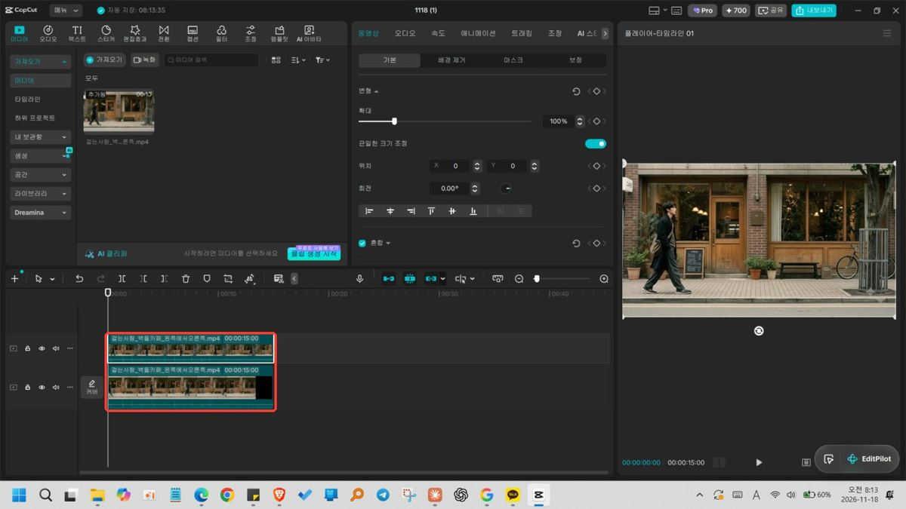
같은 영상이 두 줄. 시작점이 둘 다 0초여야 사람이 어긋나지 않습니다.
3위쪽 영상의 배경 지우기 💎 프로 필수
- 위쪽 영상을 누르기 (아래쪽 아님!)
- 오른쪽 패널 동영상 → 배경 제거
- 자동 삭제 체크
- 「처리 중 ○○%」가 끝날 때까지 기다리기
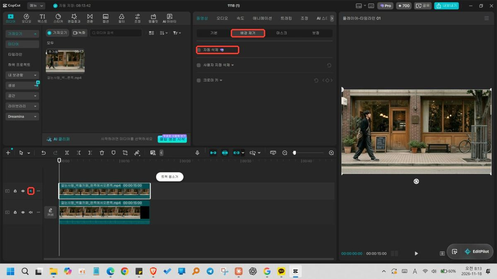
위쪽 영상을 누른 상태의 배경 제거 탭. 왼쪽 스피커를 누르면 「트랙 음소거」 표시가 뜹니다.
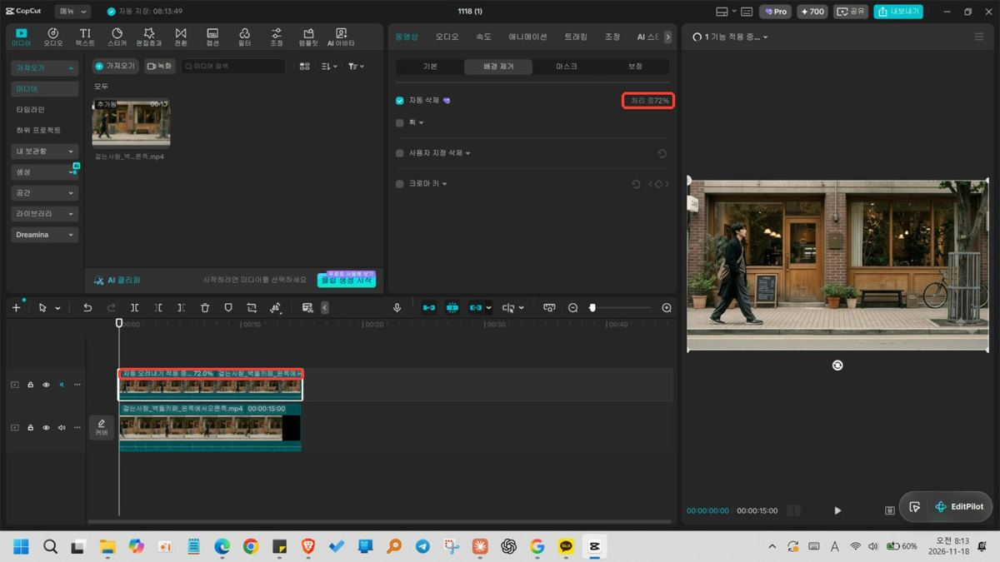
「처리 중 72%」. 15초 영상은 10초 안팎이면 끝나고 「자동 컷아웃 완료」가 뜹니다.
4큰 제목 글자 넣기 💎 텍스트 템플릿 필수
- 위쪽 메뉴 텍스트 → 텍스트 템플릿에서 보석 표시가 있는 큰 타이틀 하나 고르기
템플릿이 마음에 안 들면 「기본 텍스트」로 넣어도 됩니다. - 오른쪽 텍스트 칸에 제목 입력 (예: COFFEE, WINTER, 2026)
- 글꼴은 굵게(B), 크기는 화면을 가로로 꽉 채울 만큼
- 글자 클립 끝을 끌어 영상 길이만큼 늘리기
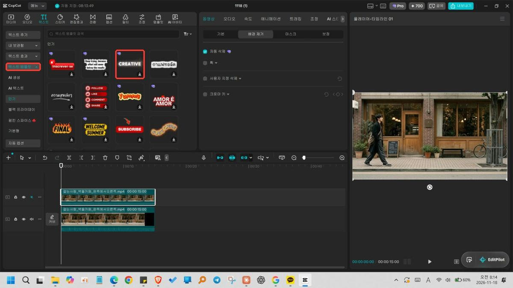
텍스트 → 텍스트 템플릿. 강사는 보석 표시가 있는 「CREATIVE」를 골라 글자를 COFFEE로 바꿨습니다.
5글자를 두 영상 사이로 옮기기 필수
처음에는 글자가 맨 위에 생겨서 사람 위에 덮여 보입니다.
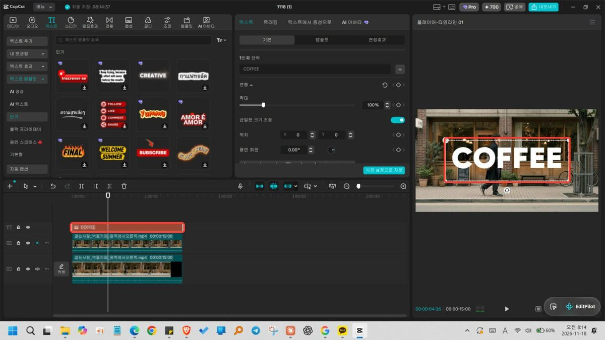
글자 줄이 맨 위 → 사람보다 글자가 앞에 보임
- 글자 클립을 잡고 두 영상 줄 사이로 끌어 내리기
- 순서가 위: 배경 지운 영상 / 가운데: 글자 / 아래: 원래 영상인지 확인
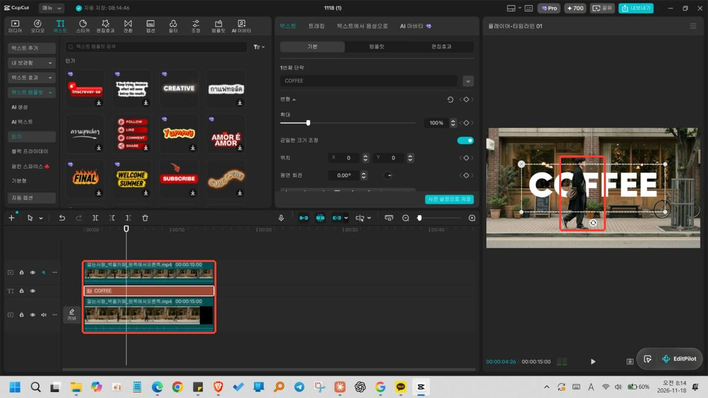
완성된 3층. 사람이 COFFEE의 O 앞을 지나갑니다.
6글자 자리 맞추고 확인하기 필수
- 글자는 사람의 허리~가슴 높이에 두세요. 너무 위에 있으면 머리 위로 그냥 보입니다.
- 사람이 지나가는 길 위에 글자를 두세요.
- Space로 재생하며 사람이 글자를 가리는 순간을 확인합니다.
- 사람 테두리가 지글거려요 → 영상 화질이 낮아서입니다. 1080 영상으로 바꿔 보세요.
- 글자가 사람 앞에 그대로 보여요 → 배경 지운 쪽이 위쪽 영상인지, 글자가 가운데인지 다시 확인.
- 사람이 두 명처럼 어긋나 보여요 → 위아래 영상 시작점이 다릅니다. 둘 다 0초로 맞추세요.
7효과음으로 마무리 선택
- 오디오 → 사운드 효과 → 검색 whoosh(휙 지나가는 소리)
- 사람이 글자 한가운데를 지나는 순간에 맞춰 넣기
- 글자 클립 → 애니메이션 → 시작에서 나타나는 효과를 하나 골라 첫 1초에 넣기
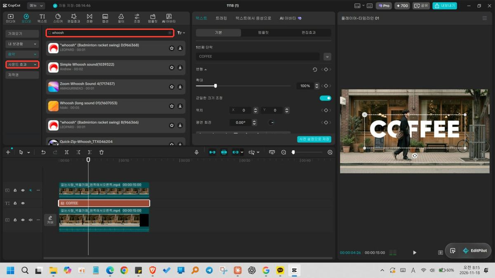
오디오 → 사운드 효과 → whoosh 검색. 오른쪽 ↓로 받아 타임라인에 끌어 놓습니다.
8한 걸음 더 선택
소리 실험실: 오디오 프로 기능 둘러보기
곰 숏폼에 들어가기 전에, 노래와 토리 영상으로 오디오 패널의 기능을 하나씩 눌러 보며 "무엇이 바뀌는지" 귀로 확인합니다.
1오디오 패널은 어디에?
타임라인에서 음악·영상 클립을 누르면 오른쪽에 패널이 바뀝니다. 영상은 오디오 탭, 음악은 기본 탭입니다. 아래로 내리면 기능이 차례로 나옵니다.
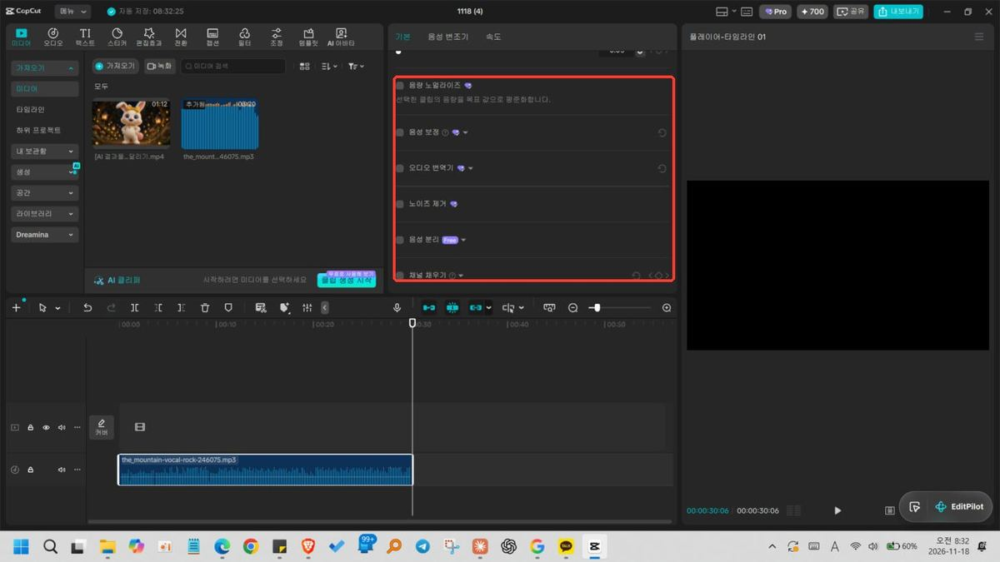
음악 클립을 누른 뒤 오른쪽 기본 탭을 아래로 내린 모습. 음향 노멀라이즈 💎 · 음성 보정 💎 · 오디오 번역기 💎 · 노이즈 제거 💎 · 음성 분리(Free) · 채널 채우기
2실습 A · 노래에서 목소리와 반주 나누기 Free 시연 위주
- 새 프로젝트에 마운틴록(the_mountain-vocal-rock.mp3) 넣기
- 먼저 30초만 남기기: 재생 헤드를 30초에 두고 W(오른쪽 삭제)
3분짜리 곡을 통째로 분리하면 한참 기다려야 합니다. - 음악 클립 누르기 → 오른쪽 아래 음성 분리 체크
- 「음성 분리 적용 중 ○○%」가 끝나면 재생해서 듣기
- 재생해서 들어 보기 → 체크를 껐다 켜며 원곡과 비교
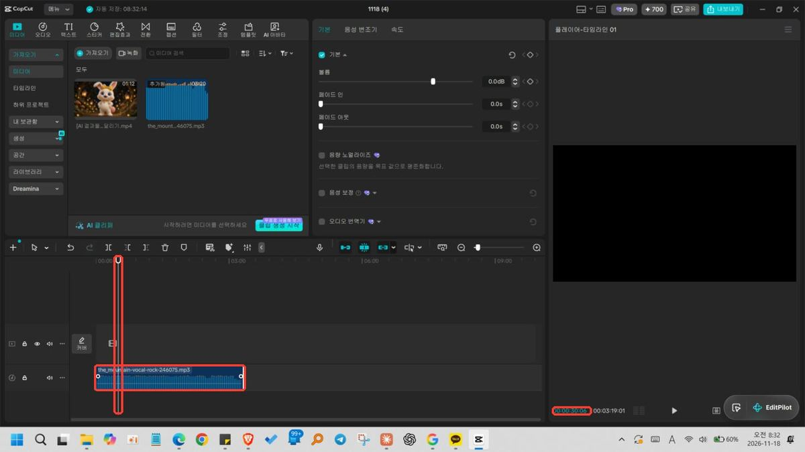
30초 자리에 재생 헤드를 두고 클립을 누른 뒤 W. 오른쪽 아래 길이가 30초로 바뀝니다.
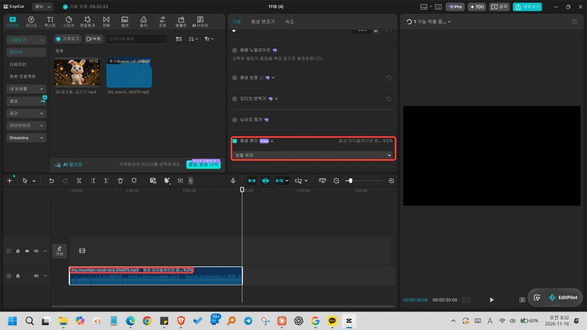
음성 분리를 체크하면 「음성 아이솔레이션 중… 9.5%」. 30초 곡은 20초 안팎이면 끝납니다.
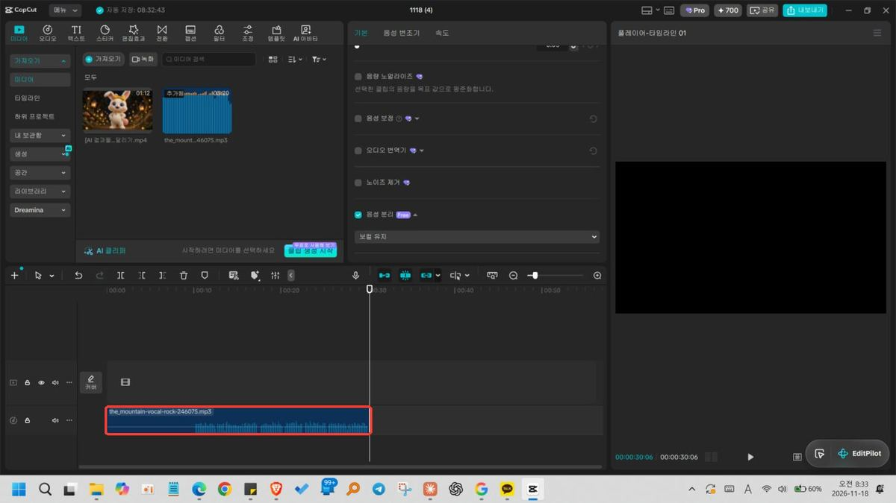
분리 후 파형. 앞쪽 10초쯤이 비어 있죠? 노래가 시작되기 전 전주(반주만 나오는 부분)라서 목소리가 없는 것입니다.
- 노래 반주만 깔고 내 목소리를 얹을 때
- 말하는 영상에서 배경음악을 빼고 목소리만 남길 때
3실습 B · 토리 목소리 바꾸기 💎 음성 변조기 시연 위주
- 뚜비(토리와 뚜비의 달리기.mp4) 넣기
- 영상 클립 누르기 → 오디오 탭 → 위쪽 음성 변조기
- 음성 필터에서 베이스 부스트, 마이크 고장, 강한 에코, 확성기를 차례로 눌러 듣기 (누르면 바로 재생됩니다)
- 아래 강도 막대로 세기 조절
- 음성 유형(캐릭터 목소리), 음성에서 노래로도 눌러 보기
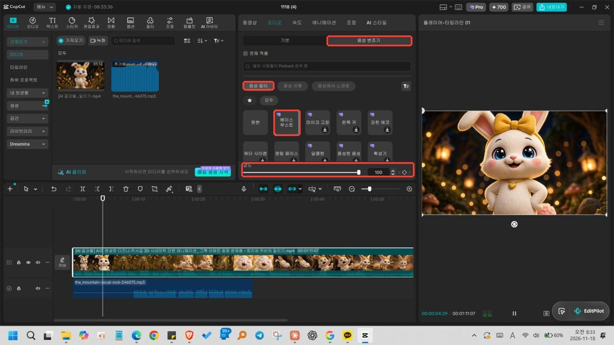
오디오 → 음성 변조기 → 음성 필터에서 「베이스 부스트」를 누른 모습. 아래 강도 막대로 세기를 조절합니다.
4에디트 파일럿에게 말로 시키기 💎 AI
- 오른쪽 아래 EditPilot 누르기
- 아래 입력 칸에 프롬프트(AI에게 하는 부탁 말) 붙여 넣고 Enter
- 「처리 중…」 → 「모든 작업 완료」가 뜨면 재생해서 확인
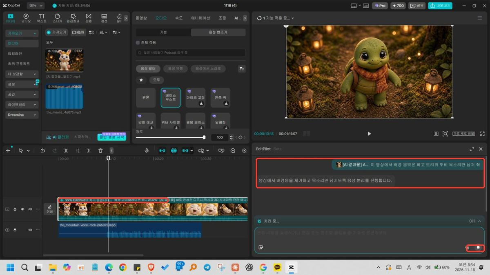
부탁을 보내면 영상 클립 위에 「EditPilot이 처리 중입니다」가 뜨고 음성 분리를 진행합니다.
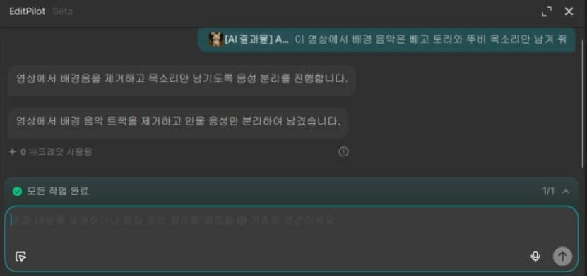
결과: 「배경 음악 트랙을 제거하고 인물 음성만 분리하여 남겼습니다」. 크레딧은 0 사용.
5한 걸음 더 선택
곰 숏폼 ① 소리 다듬기
오늘의 작품입니다. 자막을 넣기 전에 소리부터 깨끗하게 만들고, 말 사이 쉬는 구간을 잘라 냅니다.
1소리 다듬기 순서
①~③은 소리만 바뀌고 길이는 그대로, ④는 영상 길이가 줄어듭니다. 그래서 ④까지 끝낸 다음 STEP 5에서 자막을 만듭니다.
2세로 프로젝트 만들기 필수
- 홈 → 프로젝트 만들기
- 가져오기 → 민원 해결(고객 불만 해결 스토리) 영상 넣기
- 영상을 타임라인으로 끌어 놓기 → 화면이 자동으로 세로(9:16)로 바뀌는지 확인
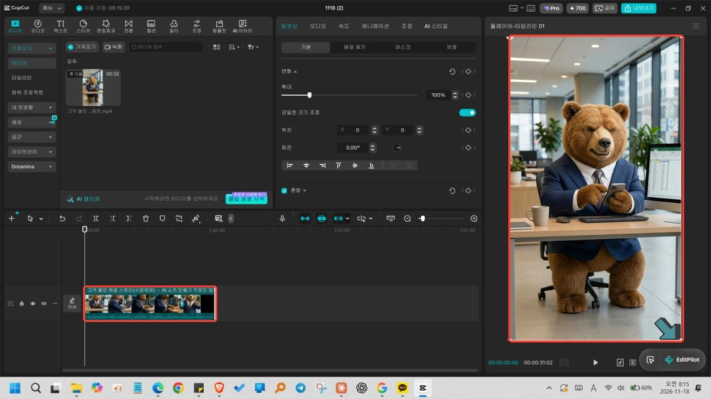
영상을 내려놓으면 미리보기가 세로로 바뀝니다.
3노이즈 제거 → 음성 보정 → 노멀라이즈 💎 ×3 필수
- 곰 영상 클립 누르기 → 오른쪽 오디오 탭
- 노이즈 제거 체크
- 음성 보정 체크 → 「처리 중」이 끝나면 아래 강도 막대 확인 (처음 값 75)
- 음향 노멀라이즈 체크
- 체크를 켰다 껐다 하며 들어 보고 비교
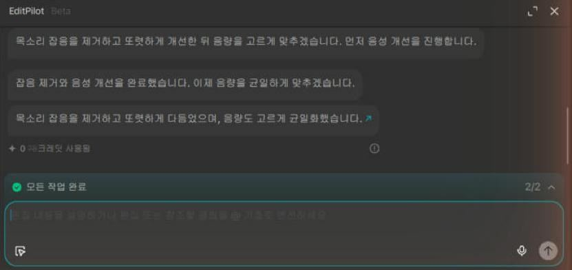
에디트 파일럿 답: 잡음 제거 → 음성 개선 → 음량 균일화를 차례로 하고 「모든 작업 완료 2/2」.
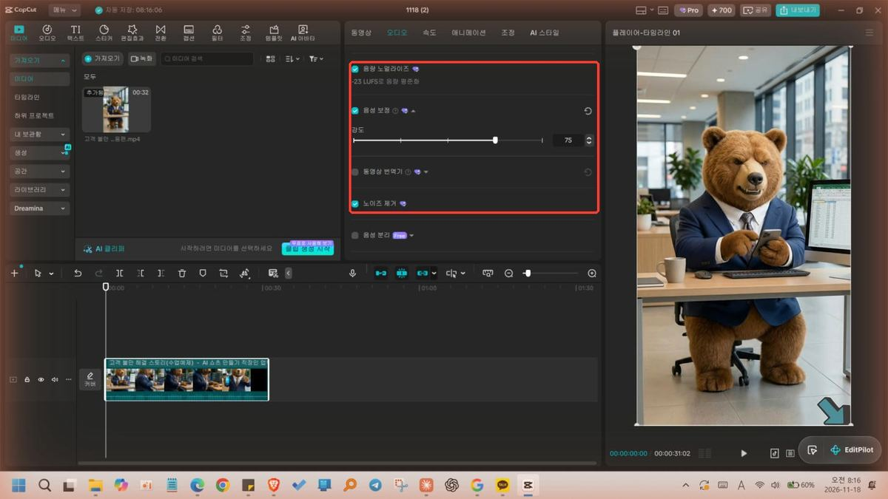
세 가지를 켠 모습. 노멀라이즈 아래 「-23 LUFS로 음량 평준화」(방송 표준 소리 크기), 음성 보정 아래 강도 75. 노이즈 제거를 켜면 「노이즈가 조절되었습니다」가 잠깐 뜹니다.
음성 보정 강도는 너무 올리면 목소리가 기계처럼 들리니 50~80 사이에서 고르세요.
4대본으로 말 사이 쉼 한 번에 자르기 💎 대본 필수
- 곰 영상 클립을 누른 채로 타임라인 위 도구 줄의 대본 버튼 누르기
- 「분석 중… 채우기용 단어 인식 중」이 끝나면 채우기용 단어 삭제 창이 열림
- 오른쪽 탭 확인:
- 일시 중지 — 말이 끊긴 빈 구간 (곰 영상은 0.6~0.7초짜리가 여러 개)
- 반복 — 같은 말을 두 번 한 곳
- 채우기용 단어 — "음", "어" 같은 말
- 지울 항목에 체크(줄 그은 글자, 처음부터 모두 체크돼 있음) → 왼쪽 아래 총 길이가 줄어드는 것 확인 (31초 → 26초)
- 오른쪽 아래 삭제
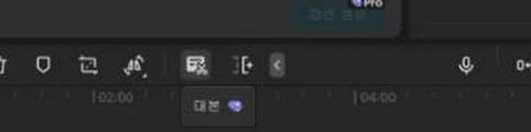
도구 줄의 「대본」 버튼 (보석 표시)
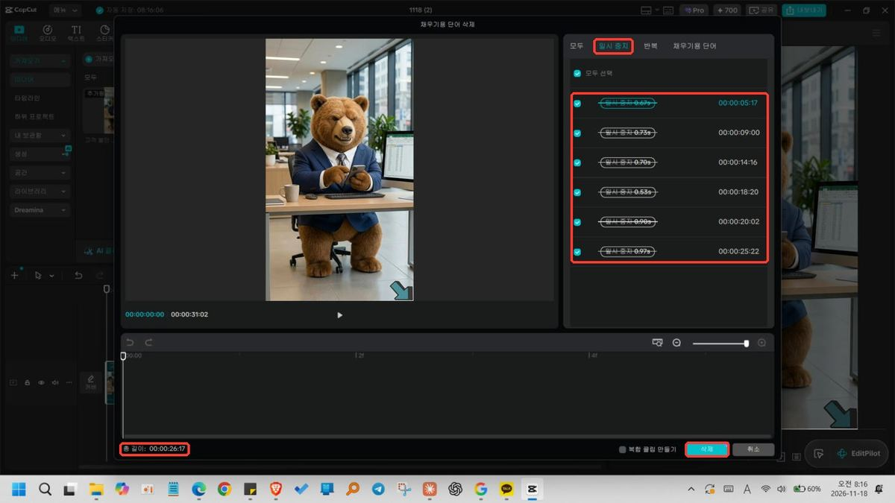
「일시 중지」 탭: 곰 영상에서 쉬는 구간 6곳(0.53~0.97초)을 찾았습니다. 왼쪽 아래 총 길이 26초 17.
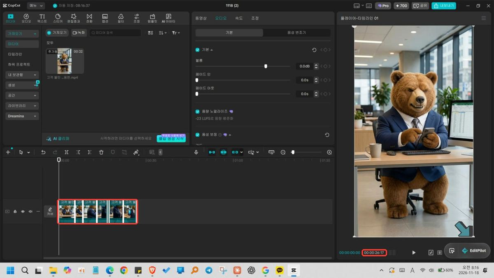
삭제 후: 영상이 7조각으로 나뉘고 길이가 31초 → 26초 17로 줄었습니다.
곰 숏폼 ② 자막 넣고 원래 자막 덮기
곰 영상에는 자막이 이미 박혀 있습니다. 자동 캡션을 만든 뒤 배경이 있는 자막으로 원래 자막을 덮어 새 자막으로 바꿉니다.
1순서가 중요합니다
2자동 캡션 만들기 Pro 필수
- 위쪽 메뉴 캡션 → 왼쪽 자동 캡션
- 소스 언어 한국어 확인 (이중 언어 캡션은 「없음」 그대로)
- 오른쪽 아래 생성 → 「음성이 인식되었습니다」가 뜨고 영상 위에 자막 줄(TT)이 생김
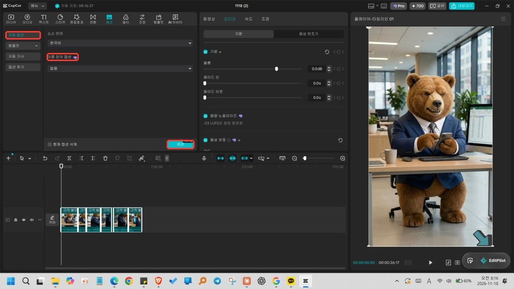
캡션 메뉴 → 자동 캡션 → 생성. 「이중 언어 캡션」 옆 보석 표시도 프로 기능입니다.
3오타 고치기 필수
- 자막 하나를 누르고 오른쪽 맨 앞 캡션 탭 → 자막이 한 줄씩 목록으로 나옴
- 틀린 줄을 두 번 눌러 바로 고치기
- 위에서 아래로 한 줄씩 읽으며 끝까지 확인
| 자동 캡션이 받아 적은 것 (예) | 바르게 |
|---|---|
| 고객님을 분석하기 / 온인을 분석하기 | 원인을 분석하기 |
| 이게 심각한 문제였습니다 | 이것은 심각한 문제였습니다 |
| 앱 앱 빨라졌습니다 ㅎㅎ | 세 배 빨라졌습니다 |
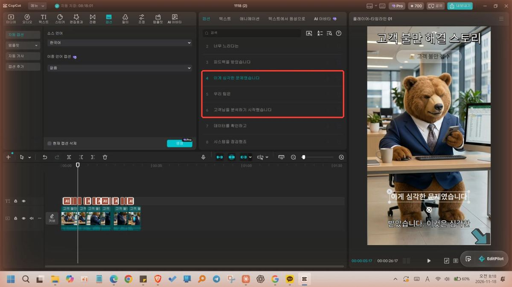
캡션 탭 목록. 빨간 상자 안 4번·6번 줄이 틀렸습니다.
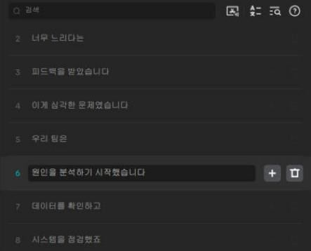
줄을 두 번 누르면 입력 칸이 열립니다. 고친 뒤 다른 곳을 누르면 저장.
4자막 배경으로 원래 자막 덮기 필수
- 자막 하나를 누르고 오른쪽 텍스트 → 기본, 위쪽 모든 주요 캡션에 적용 체크 확인 (한 번에 전체 자막이 바뀜)
- 아래로 끝까지 내려 배경 체크 → 옆 ∨ 눌러 펼치기
- 색상 검정, 불투명도 100%, 너비 100%
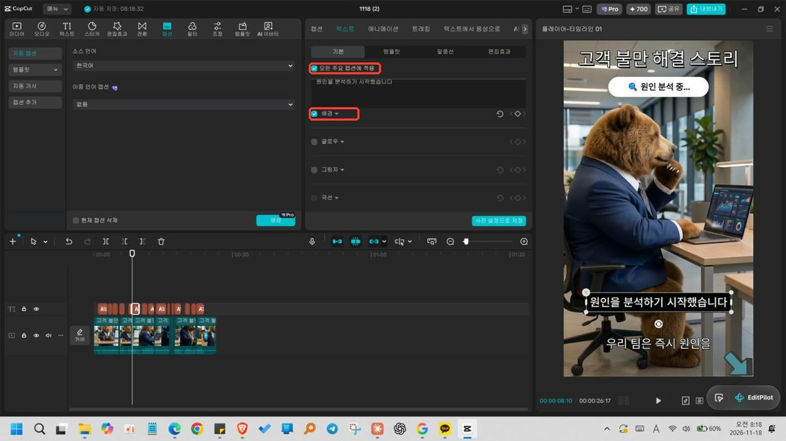
배경을 켜면 글자 뒤에 검은 상자가 생깁니다. 아직 원래 자막(아래 흰 글자)이 보이죠.
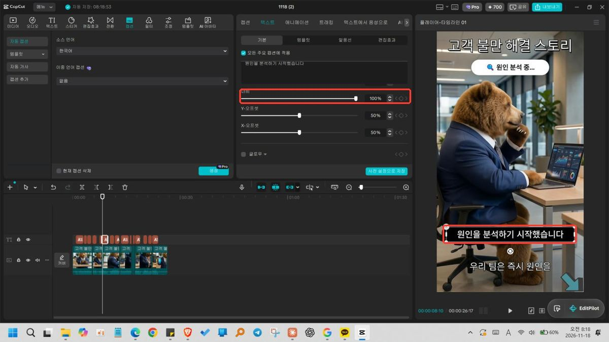
너비를 100%로 올리면 상자가 양옆으로 넓어집니다.
- 위로 올라가 변형에서 확대 130%, 위치 Y -1600
- 재생하며 원래 자막이 삐져나오는 곳이 없는지 처음부터 끝까지 확인
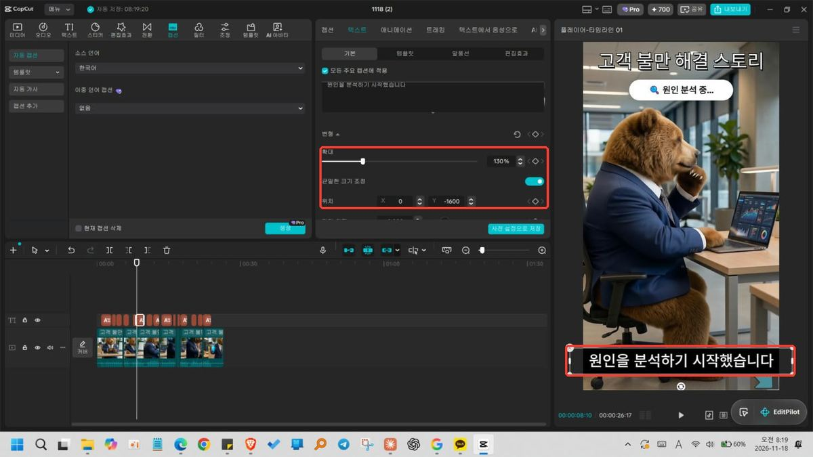
원래 자막 자리에 새 자막이 딱 덮였습니다.
| 항목 | 곰 영상 값 |
|---|---|
| 위치 Y · 확대 | -1600 · 130% |
| 배경 색 · 불투명도 · 너비 | 검정 · 100% · 100% |
| 배경 높이 | 14%(기본) → 원래 자막이 위로 보이면 25% |
- 숫자가 이상하게 들어가요 → 숫자 칸에 바로 치면 첫 글자가 빠지기도 합니다(-1500 → -500). 입력한 뒤 꼭 다시 보세요.
- 원래 자막 윗줄이 상자 위로 보여요 → 원래 자막이 두 줄인 곳입니다. 배경 높이를 25% 정도로 올리세요.
5마지막 장면에 펀치 줌 선택
- 재생 헤드를 곰이 엄지척 하는 마지막 장면 시작에 두기
- 그 영상 조각을 누르고 동영상 → 기본 → 확대 옆 ◇ 눌러 키프레임 (100%)
- 눈금자를 살짝 오른쪽(약 0.3초 뒤)으로 눌러 재생 헤드 옮기기
- 확대를 130%로 바꾸기 → ◇가 저절로 하나 더 찍힘
- 재생해서 화면이 "쿵" 하고 다가오는지 확인
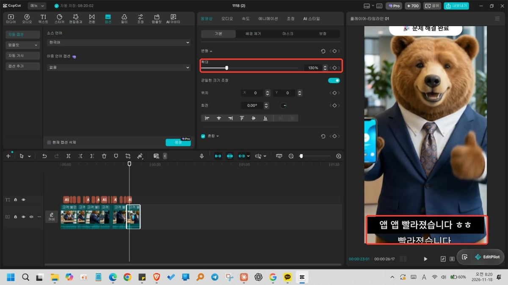
확대 130%. 곰이 크게 다가왔지만 아래 원래 자막(빠라졌습니다)이 삐져나온 것도 보입니다.
6엄지척 장면에 스티커 💎 선택
- 위쪽 메뉴 스티커 → 검색 thumbs up
- 보석 표시가 있는 스티커 하나를 마지막 장면 위 트랙에 끌어 놓기
- 곰 얼굴과 자막을 가리지 않게 크기·자리 맞추기
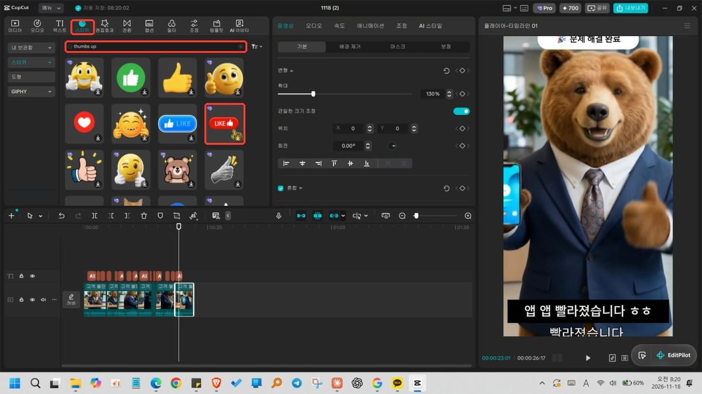
「thumbs up」 검색 결과. 왼쪽 위 보석 표시가 프로 스티커입니다.
7한 걸음 더 선택
- 새 프로젝트에 곰 영상을 다시 넣기 (자막이 없는 상태)
- 캡션 → 템플릿 → 히트에서 디자인 고르기 → 미리보기 확인
- 아래 버튼이 캡션 생성으로 바뀜 → 누르면 디자인이 입혀진 자막이 바로 만들어짐
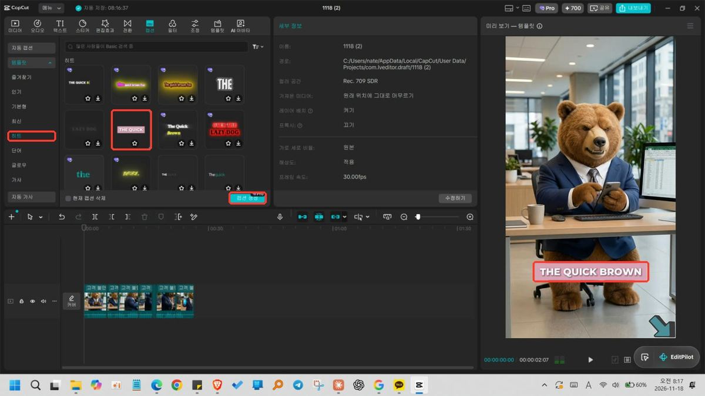
템플릿을 누르면 미리보기에 디자인이 보이고, 아래 버튼이 「캡션 생성」으로 바뀝니다.
내보내고, 올리고, 로그아웃
오늘 만든 두 작품을 파일로 내보내고, 스페이스에 올려 집에서도 이어서 고칠 수 있게 합니다.
1내보내기
- 오른쪽 위 내보내기
- 파일 이름을 알아볼 수 있게 바꾸기 (예: 3회차_곰숏폼, 3회차_글자뒤인물)
- 해상도 1080P 확인
- 워터마크 삭제 💎 켜기 (AI로 만든 이미지·영상에 붙는 표시를 지움)
- 내보내기
- 끝나면 유튜브·틱톡 공유 창은 닫기
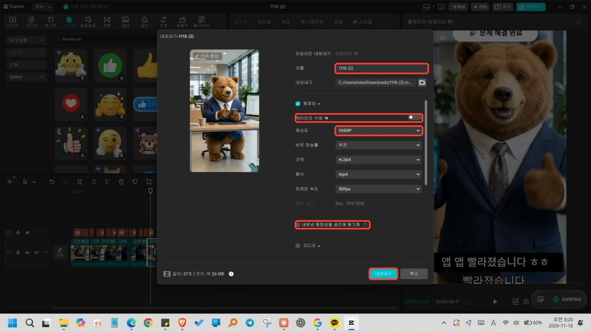
내보내기 창. 이름·저장 위치(폴더 아이콘)·해상도 1080P·워터마크 삭제(💎)·공간 동기화 체크
2스페이스에 올리고 로그아웃
- 홈 → 프로젝트 목록에서 오늘 프로젝트 위에 마우스 → ⋯ → 업로드
- 내 스페이스 고르기 → 업로드
- 왼쪽 공간에서 올라온 것 확인 (조금 걸립니다)
- 공용 PC이므로 로그아웃까지 꼭 하기
3오늘 체크리스트
- ☐ 글자 뒤로 사람이 지나가는 타이틀 1편 내보내기
- ☐ 노래에서 목소리와 반주를 나눠 들어 봤다
- ☐ 노이즈 제거·음성 보정·노멀라이즈를 켜고 끄며 비교해 봤다
- ☐ 대본으로 쉬는 구간을 잘라 31초를 줄였다
- ☐ 자동 캡션 → 오타 수정 → 배경 덮기 순서로 곰 숏폼 1편 내보내기
- ☐ 스페이스 업로드와 로그아웃